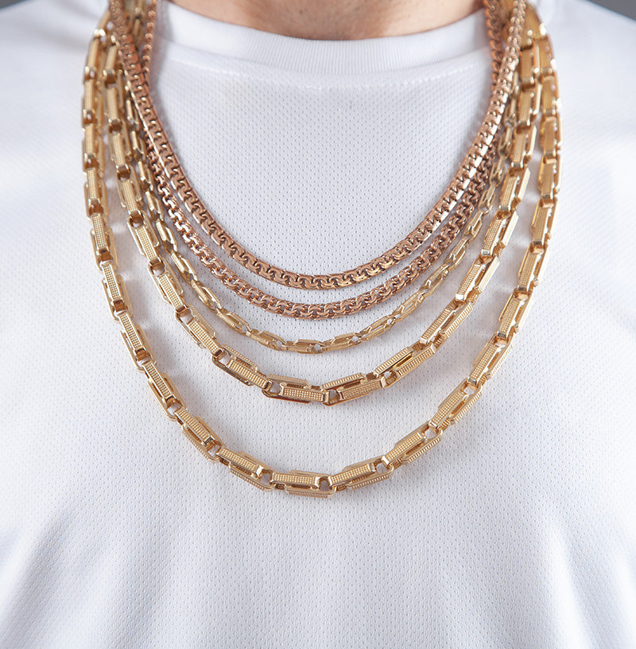
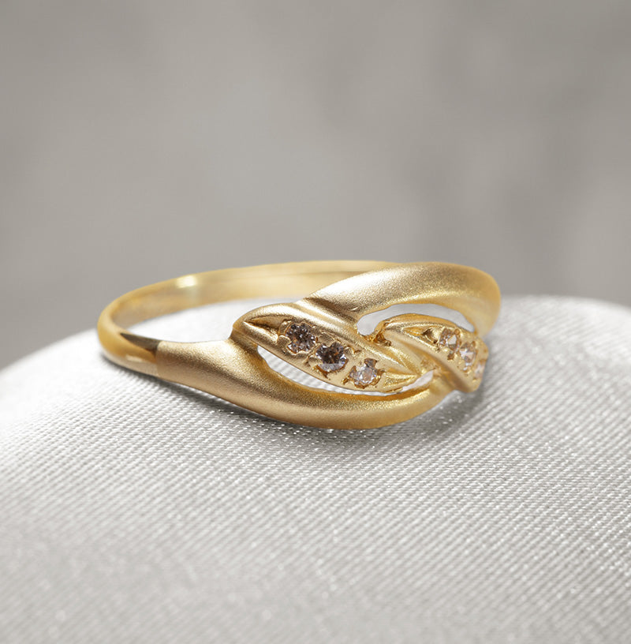
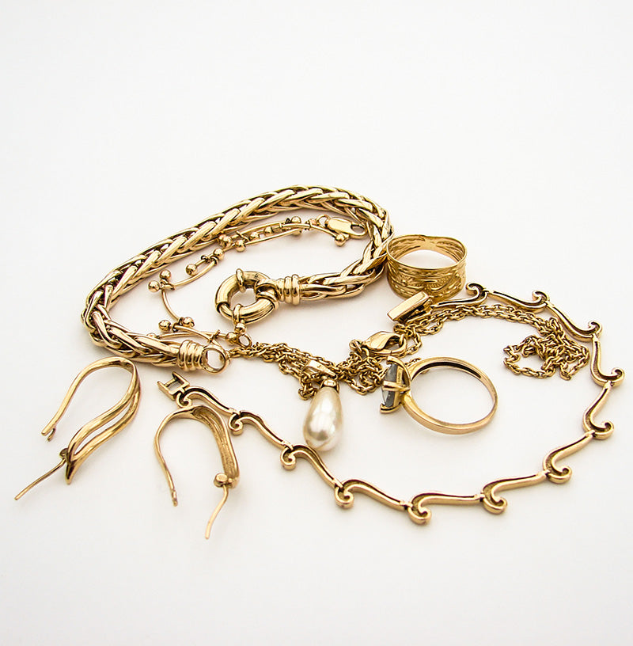
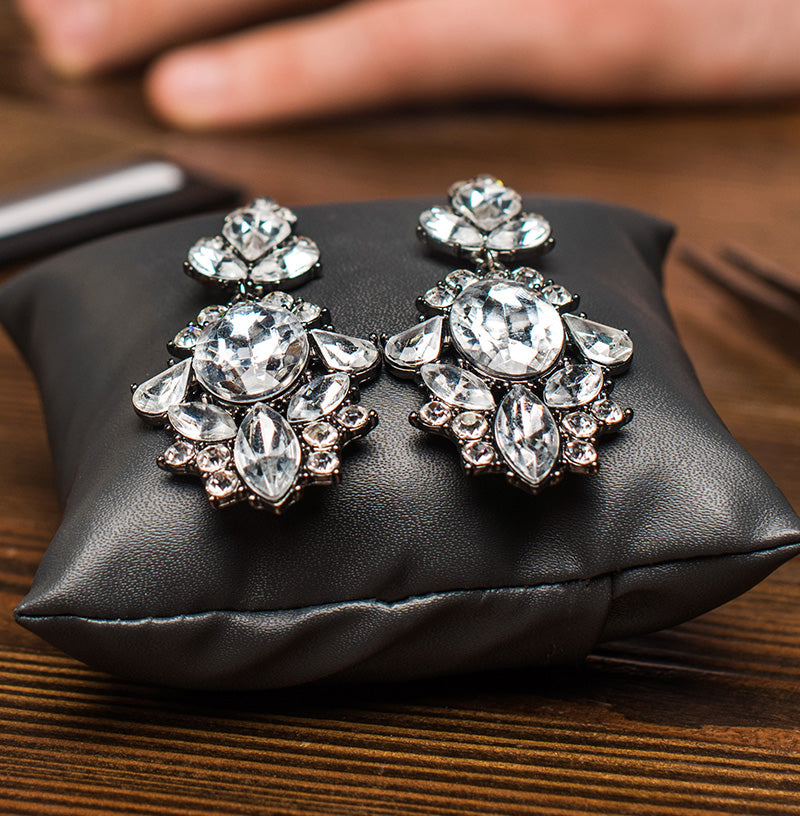

<style>
/* Force override slick default arrows */
.slick-prev,
.slick-next {
  background: transparent !important;
  border: none !important;
  width: auto !important;
  height: auto !important;
  z-index: 200 !important;
}

.custom-arrow {
  background-color: white !important;
  padding: 10px;
  transition: background-color 0.3s ease ;
  z-index: 200;
  border: none;
  border-radius: 0px;
}

.custom-arrow::before,
.custom-arrow::after {
  content: '' !important;
}

.custom-arrow img {
  width: 20px;
  height: 20px;
  display: block;
}

.custom-arrow:hover {
  background-color: var(--golden-color) !important;
}

.slick-prev {
  left: 0px !important;
}

.slick-next {
  right: 0px !important;
}
</style>

<section class="w-full my-5 text-center ">

    <h4 class="font-dance text-xl sm:text-2xl ">Join Our Social Circle


        
        

    </h4>
    <h2 class="font-ancizar text-2xl sm:text-4xl font-semibold flex items-center gap-2 justify-center mt-5 mb-10"><i class="fab fa-instagram "></i>@designerjewels</h2>


    <div class="slider2 flex relative">
        <a class="mx-2" href="/collections/earring"></a>
        <a class="mx-2" href="/collections/earring"></a>
        <a class="mx-2" href="/collections/earring"></a>
        <a class="mx-2" href="/collections/earring"></a>
        <a class="mx-2" href="/collections/earring"></a>
        <a class="mx-2" href="/collections/earring"></a>
        <a class="mx-2" href="/collections/earring"></a>
        <a class="mx-2" href="/collections/earring"></a>
    </div>
</section>